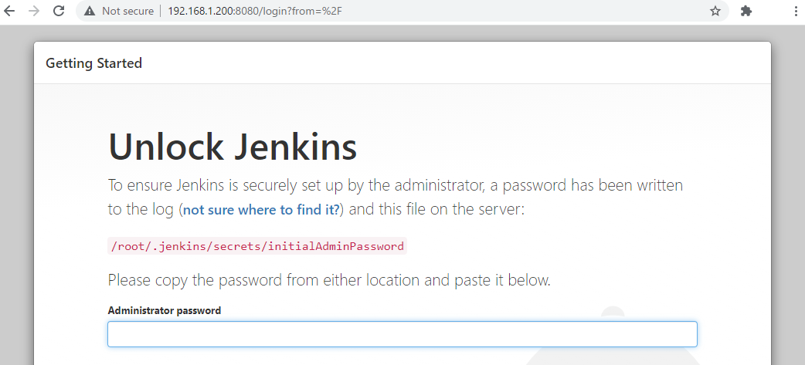
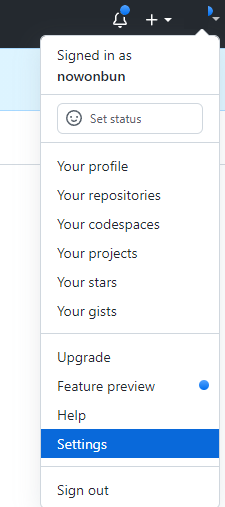

[CentOs] ジェンキンス(Jenkins)をインストールする方法
こんにちは。明月です。
この投稿はCentOSでジェンキンス(Jenkins)をインストールする方法に関する説明です。
ジェンキンス(Jenkins)とはソフトウェアを開発する時に統合サービスをするツール、つまり、CI(Continuous Integration)と言います。
統合サービスというツールは我々がプロジェクトを開発する時、一人ではなく、多数の人と開発する時に一つのブランチで統合してアップデートするツールと言います。
まず、ソースを統合するツールとして最近よく使うGitがあり、SVNなどがあります。これはソースを統合するツールなのでCIツールとは差異があります。
各のローカルPCで開発して我々がGitを通ってコミット及びPull requestをします。でも、これは各の環境で開発したものなので、すべての環境で統合されたということではありません。
つまり、私のローカルではエラーがありませんが、環境が違うと開発環境(Dev env)や実際のサーバ(Prod env)にアップデートするとエラーが発生する時があります。
代表的にデータベース接続設定やファイルパースなどの差異があります。
それでこのジェンキンスを通って統合環境で再デプロイ(Redeploy)をして最終的にサービスを安全に運用するためのツールだと思えば良いでしょう。
CIツールの概念はこれですが、実は上のエラー処理まですべて検証するなら凄く複雑な作業をしなければならないですが、一般的にはソースを再統合して該当なサーバに再ビルドしてデプロイする機能だと思えば良いです。
まず、CentosのこのJenkinsをインストールする方法は二つの方法があります。
yumを通ってinstallする方法があり、ソースをそのままにDeployして使う方法があります。
私もyumを通ってやったことではないので、詳細に説明は大変ですが、yumを通ってインストールする方法は簡単ですが、権限設定が少し複雑だと聞きました。そのため、私はソースをダウンロードしてインストールする方法でやりましょう。(私の個人開発サーバは一台なので二回は大変ですね。)
Jenkinsをインストールするためにはjavaが必要だし、tomcatとgit、そしてmavenをインストールしなければならないです。
link - [CentOS] Java インストール
link - [CentOS] Tomcat インストール方法
gitとmavenは別の投稿がないので、インストールする方法を紹介します。
gitはただyumでインストールしましょう。
yum install git
mavenはyumでインストールすると少しめんどくさいことができるので、ただソースをダウンロードした後で圧縮を解凍してPATH設定をしましょう。
link - https://maven.apache.org/download.cgi
## ダウンロード
wget https://dlcdn.apache.org/maven/maven-3/3.8.3/binaries/apache-maven-3.8.3-bin.tar.gz --no-check-certificate
## 圧縮を解凍
tar -zxvf apache-maven-3.8.3-bin.tar.gz
## シンボリックリンク設定
ln -s apache-maven-3.8.3 maven
そして最後に/etc/profileの環境設定です。
export MAVEN_HOME=/usr/local/maven
PATH=$PATH:$HOME/bin:$MAVEN_HOME/bin
export PATH

このようにjava、tomcat、gitとmavenをインストールしました。
まず、Jenkinsホームページに行ってJenkinsをダウンロードしましょう。
link - https://www.jenkins.io/download/
最新バージョンをダウンロードしても良いですが、私はもっと安定的なLTSバージョンをダウンロードします。
そしてwebappsフォルダに移動してROOTフォルダの中をすべて削除してファイルをコピーします。
これでjar xvfコマンドでwarファイルの圧縮を解凍しましょう。
この圧縮が解けたらtomcatを起動します。
私はインストール中でエラーが発生しました。
実は以前に私がインストールする時にはcatalina.shでJAVA_OPTS="$JAVA_OPTS -Djava.awt.headless=true"だけ追加したら解決しましたが、今回がなぜできないの？
link - https://www.jenkins.io/doc/administration/requirements/jenkins-on-java-11/
ジェンキンスはopenjdk 8と11だけ作動するって...;;;
そのため、openjdkをバージョンダウンしました。
Javaが最近バージョンにより差異がすごくあるので、バージョンアップするたびに頭が可笑しくなる感じです。
また、起動しました。
正常に作動します。

そのパスでパスワードファイルがあります。
入力するとPluginをインストールする画面が表示されます。
pluginは別にインストールが可能なので一旦、提案するpluginだけインストールしましょう。
それなら始めに管理者のIDとパスワード設定画面がでます。
そしてURL設定ですが、ドメインをもっているならドメイン名を入力し、私はテストサーバなのでただIPアドレスを入れます。

設定が完了しました。
これからgithubを連結して作成しましょう。
本人のgithubに接続してプログラムトークンキーを取得しなければならないです。

Settingsメニューに移動してDeveloper settingsに移動します。
そしてPersonal access tokensメニューに移動してトークンを生成しましょう。
Noteにトークン名を作成してrepoとhook、orgを選択しましょう。
必要なものがあればもっとクリックしでもいいです。
生成ボタンを押下するとtokensキーが生成されます。
また、ジェンキンス(jenkins)に戻りましょう。
そしてItemを作成しましょう。
適当にプロジェクト名を入れてFreestyle projectを選択しましょう。
そしてソースを取得するGithubアドレスを入れます。
そしてCredentialsを追加しましょう。
そしてタイプをSecret Textに選択してSecretキーをGithubで貰ったtokensキーを入れます。
そしてJenkinsにはcommitする時のIDを入れます。(commitする時の識別する名を入れればよいでしょう。)
ブランチは計画したブランチを入れたらよいでしょう。私はただmasterを入れました。
そしてBuildが終わったら処理するshellコマンドを入れましょう。
# トムキャットサーバー停止
/****/catalina.sh stop
sleep1s
# ビルド
mvn package -Dmaven.test.skip=true
sleep 1s
# warファイルコピー
cp -rf ./target/nowonbun*.war /****/nowonbun.war
sleep 1s
# warファイル削除
rm -rf ./target/nowonbun*.war
sleep 1s
# トムキャットのDeployフォルダに移動
cd /****/
# 既存のファイル削除
rm -rf ROOT
sleep 1s
# ROOTフォルダ生成
mkdir ROOT
sleep 1s
# warファイル移動
mv nowonbun.war ./ROOT/nowonbun.war
sleep 1s
# ROOTフォルダ移動
cd ROOT
# 圧縮を解凍
jar xvf nowonbun.war
sleep 1s
# warファイル削除
rm -rf nowonbun.war
sleep 1s
# 環境ファイルを設定およびコピー
cd WEB-INF
cd classes
cp -rf /home/shared/env/nowonbun/* .
sleep 1s
# トムキャットサーバ起動
/****/catalina.sh start
sleep 1s
上の例は私が任意でtomcatを新しく設定してDeployする例を作成しました。
上みたいにシェルコマンドを使ったらgitからpullが完了すると実行されます。
これから実行ボタンを押下しましょう。
そうしてコンソール結果をみるとpullが完了してshellが事項することを確認できます。
実際のサーバで確認するとソースがtomcatサーバにしっかり圧縮が解凍したことを確認できます。
ここまでCentOSでジェンキンス(Jenkins)をインストールする方法に関する説明でした。
ご不明なところや間違いところがあればコメントしてください。
- [CentOs] ジェンキンス(Jenkins)をインストールする方法2021/10/18 18:28:58
- [Ubuntu] PHPをインストール、Composer設定する方法2019/11/13 07:32:21
- [Ubuntu] テーマ(Arc)を変更する方法(tweak)2019/11/12 07:32:13
- [Ubuntu] Apache2をインストールする方法2019/11/11 07:28:28
- [Ubuntu] 「acquire the dpkg frontend lock」のエラーを解決方法2019/11/10 22:19:34
- [Ubuntu] JavaインストールとEclipseをインストールする方法2019/11/08 07:29:55
- [Ubuntu] MariaDB(Mysql)をインストールする方法2019/11/07 07:50:58
- [Ubuntu] Chromeをインストールする方法2019/11/06 19:48:19
- [Design pattern] 2-4. デコレーターパターン(Decorator pattern)2021/10/28 20:11:13
- [C#] 58. ウィンドウフォーム(Window form)を作成する方法、そしてウィンドウメッセージとキュー2021/10/27 20:35:44
- [Design pattern] 2-3. ブリッジパターン(Bridge pattern)2021/10/27 20:32:21
- [Design pattern] 2-2. コンポジットパターン(Composite pattern)2021/10/27 20:30:54
- [Design pattern] 2-1. アダプターパターン(Adapter pattern)2021/10/26 19:12:40
- [Project design] プログラム最終テスト - ST(System test(Standard, Scenario))2021/10/26 19:10:07
- [Project design] プログラム結合テスト - IT(Integration test)2021/10/25 20:12:17
- [Python] Seleniumライブラリを使う方法(自動ウェブテスト、ウェブスクレイピング)2021/10/25 19:29:00
- [Design pattern] 1-5. プロトタイプパターン(Prototype pattern)2021/10/22 19:35:45
- [Project design] プログラム検証とテスト - Unitテスト2021/10/22 19:34:09
- [C#] 57. コーティング規約2021/10/21 18:57:02
- [C#] 56. 値の初期化及び基本データ値(default)を設定する方法、そして原始データのnull処理、?と??の使い方2021/10/21 18:54:41
- [C#] 55.namespaceとusing、そしてpartialの使い方2021/10/21 18:51:39
- [C#] 54. Reflection機能を使い方 - Attribute2021/10/20 19:29:31
- [Project design] プログラム制作(コーディング) - クラス作成方法2021/10/20 19:28:09